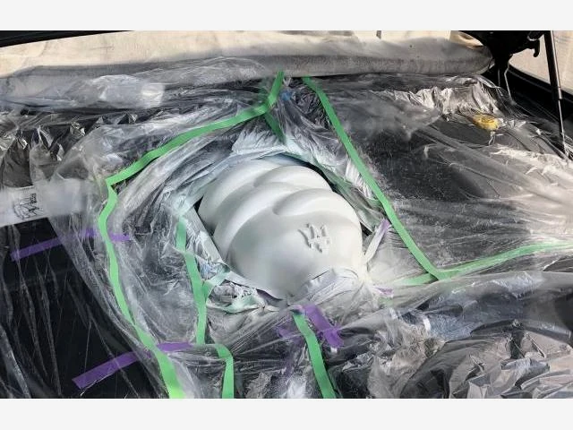
マセラティ グラントゥーリズモ
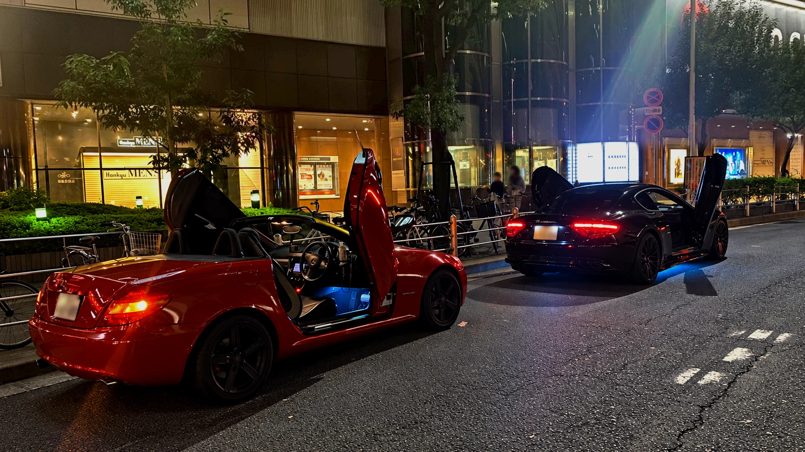
車販売、各種カスタム、車検、修理まで全てお任せください！
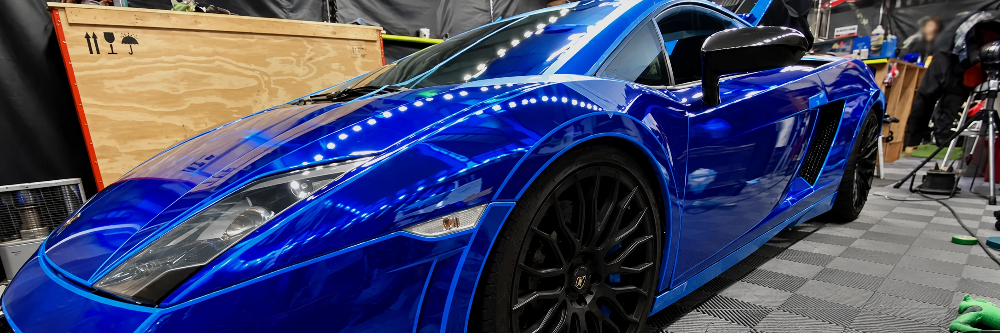
好きなカラーリングで愛着度UP！カーボディの保護にも効果的！
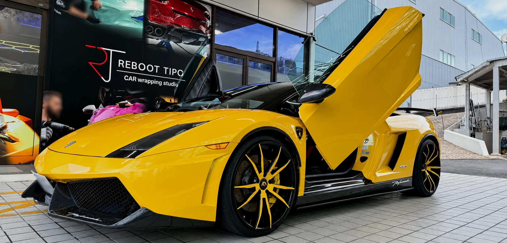
メリットも高く、とにかくカッコイイ ドレスアップ
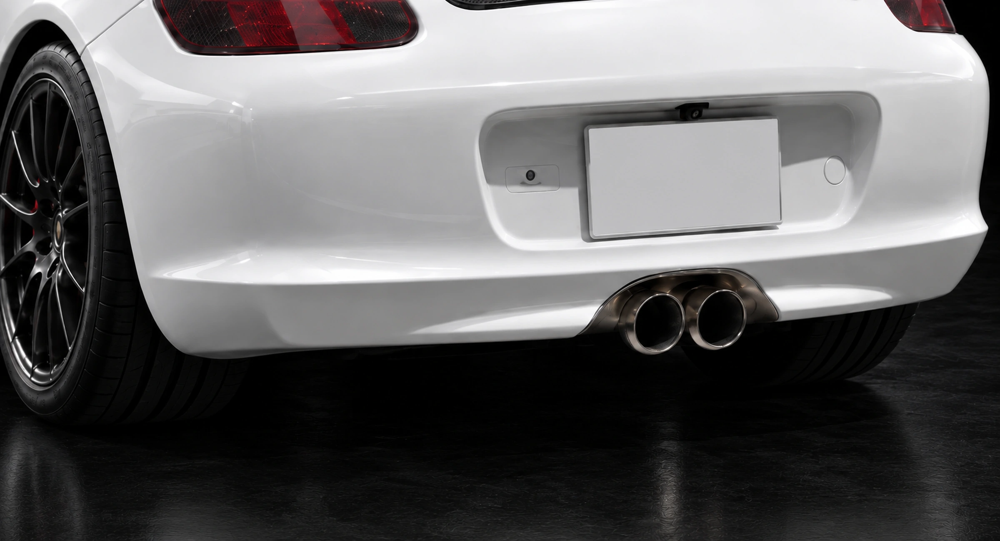
マフラーから「パン！パン！」と炸裂音を鳴らす人気のドレスアップ型チューニング。
パワーはそのままにしたい方はバブリングのみもおすすめです。
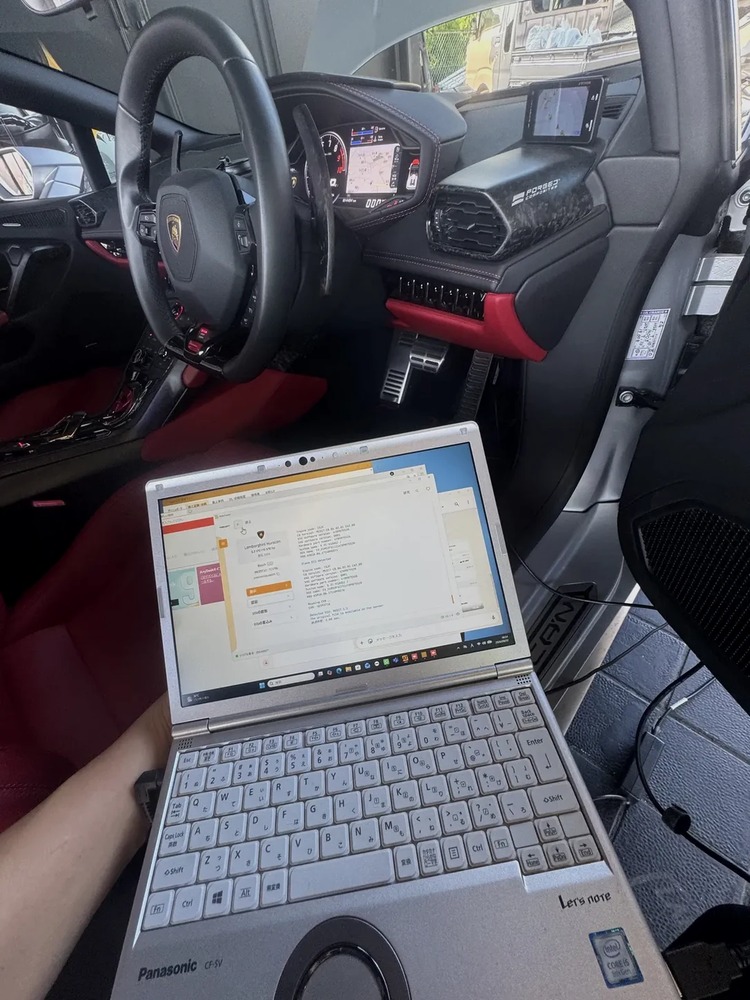
当社では一台一台に設定したオリジナルチューニングデータを提供致します。
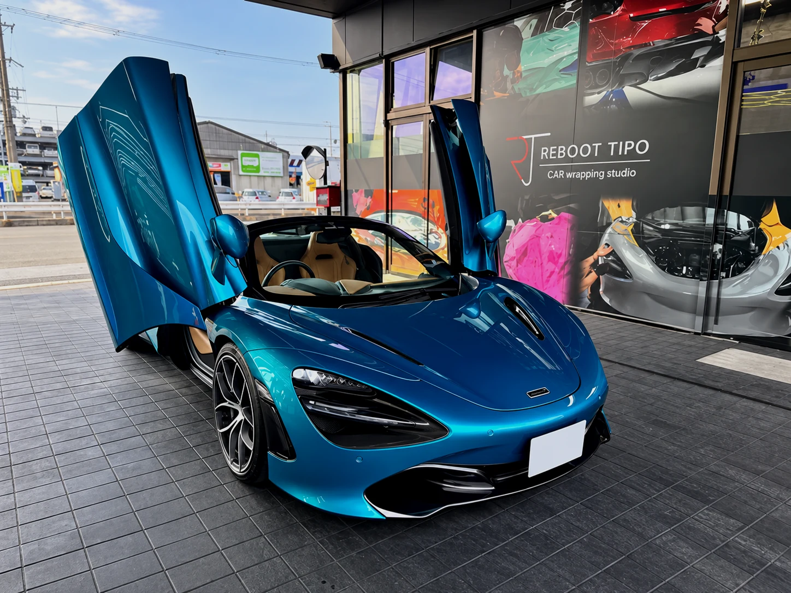
厳選した車両に拘りを持って販売しております！
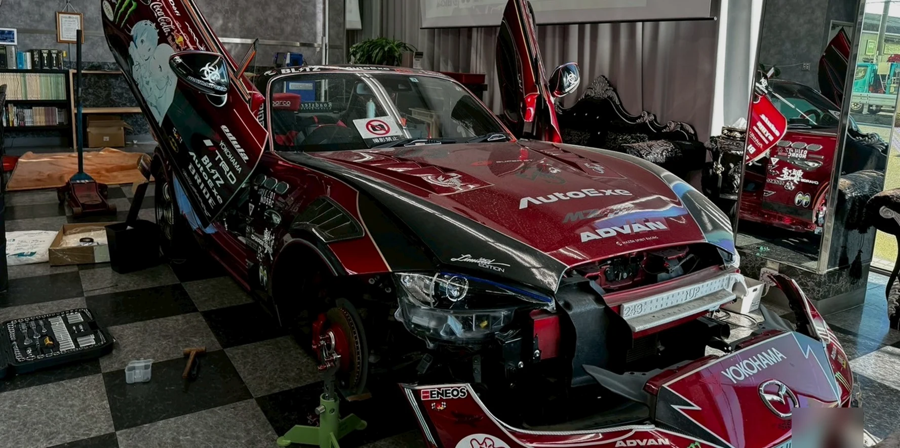
板金塗装／カーラッピング／カスタム／車検／整備／登録納車まで全て自社でおこないます。
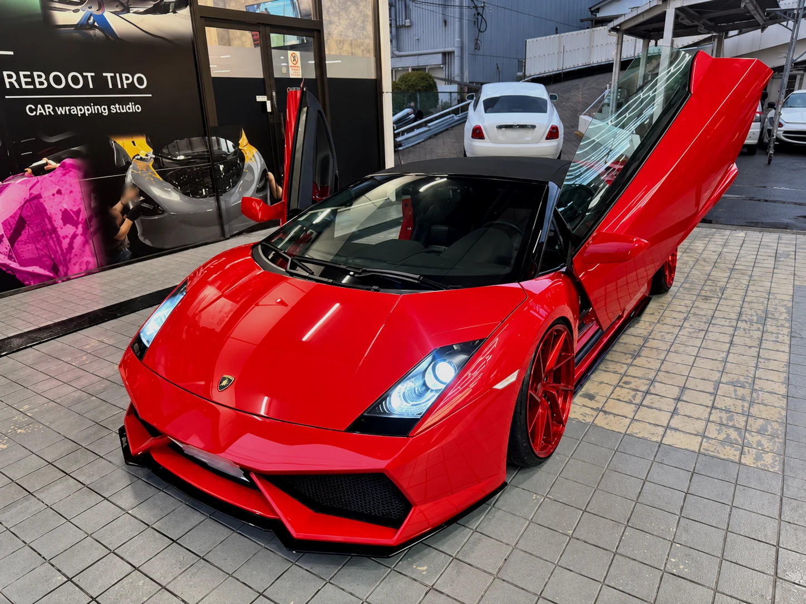
他社で断られた相談や入庫を断られたカスタム車両も大歓迎です！
弊社が一から製造しているワンオフのガルウィングパーツで仕上げております！
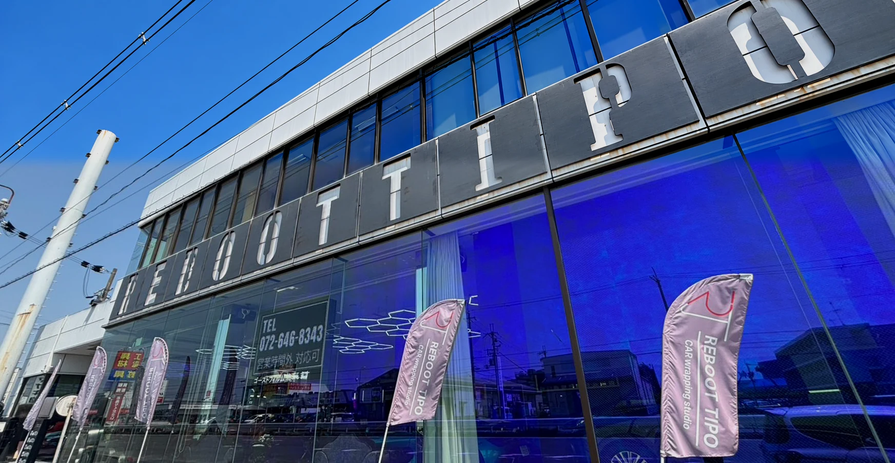
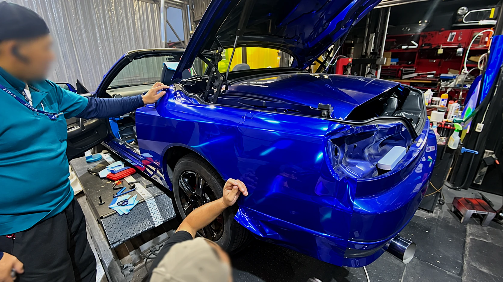
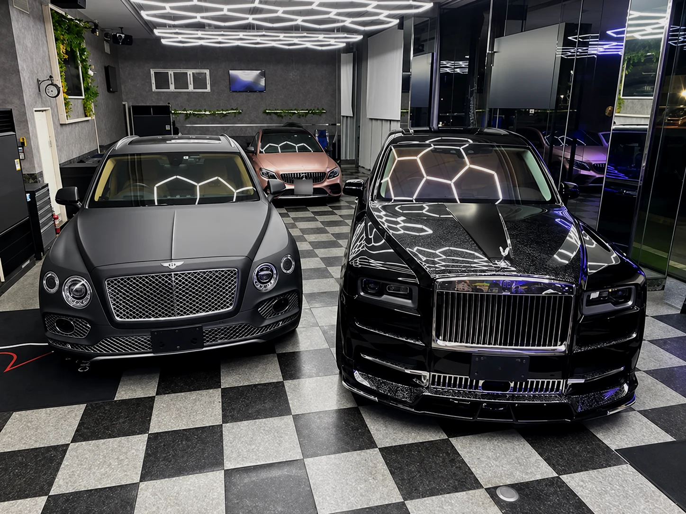

マセラティ グラントゥーリズモ
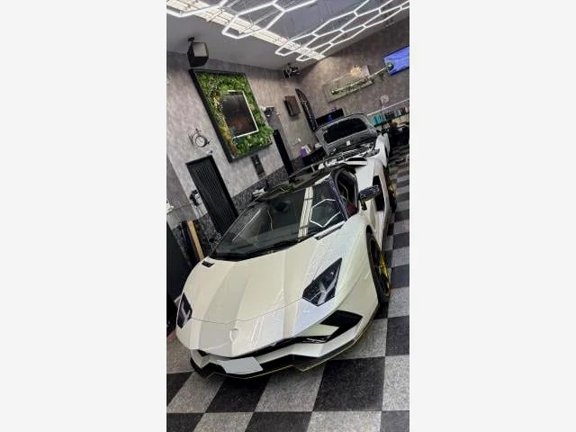
ランボルギーニ アヴェンタドール
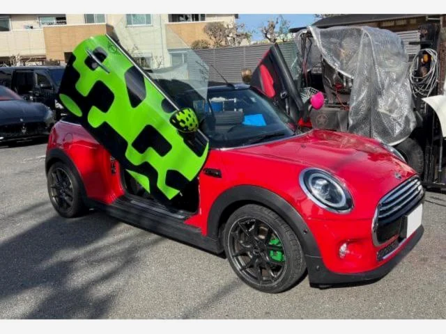
ＭＩＮＩ ＭＩＮＩ
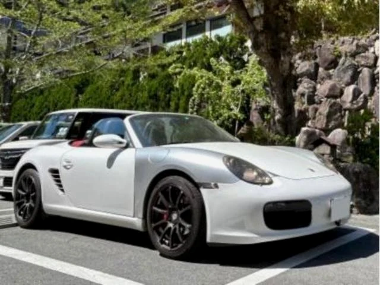
ポルシェ ボクスター
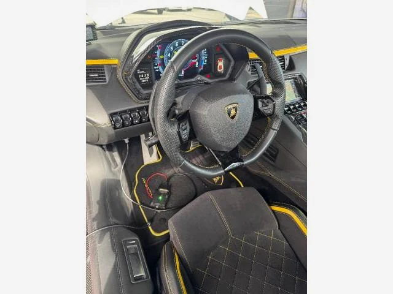
ランボルギーニ アヴェンタドール
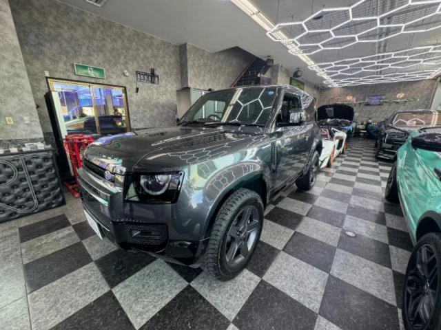
ランドローバー ディフェンダー